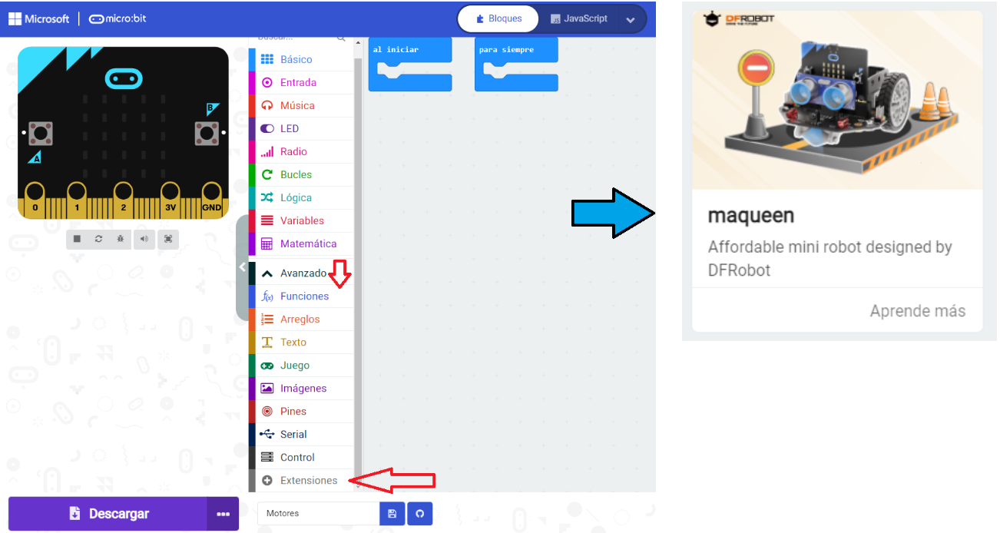
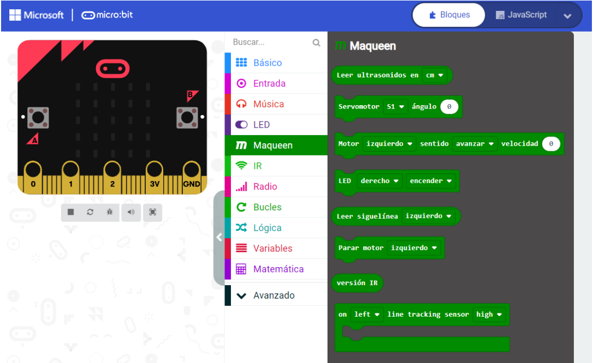
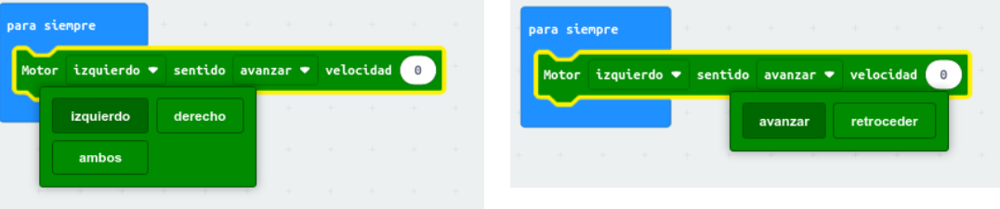
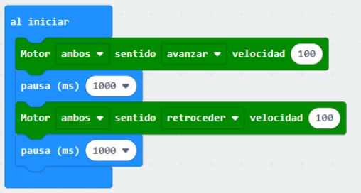
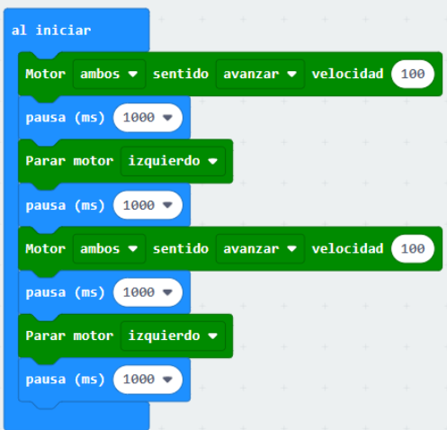
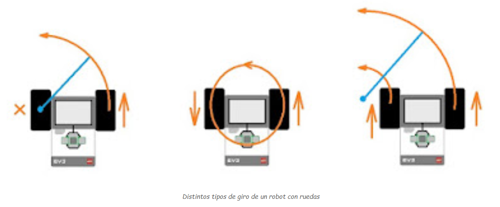
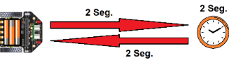
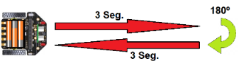
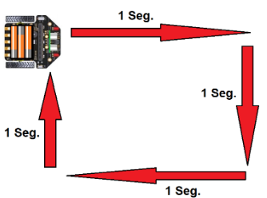
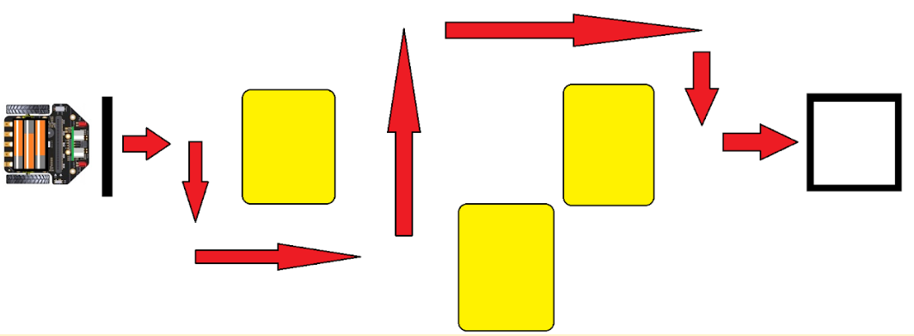

Para manejar el robot Maqueen con Makecode, tenemos que cagar previamente la extensión maqueen en el menú Avanzado -> + Extensiones

A partir de entonces, disponemos de una nueva categoría llamada Maqueen, con varios bloques que nos permiten controlar el robot.

El bloque que nos permite mover los motores es el bloque motor, mediante el cual podemos elegir el motor que queremos mover, el sentido de giro y la velocidad del mismo.

La velocidad que podemos indicar va desde 0 hasta 255.
En el siguiente ejemplo podemos comprobar el movimiento del robot en línea recta:

El bloque parar motor sirve para parar uno de los motores o ambos, también nos permite hacer girar el robot cuando está moviéndose, como el siguiente ejemplo:


¿Te atreves a programar el robot Maqueen con los bloques vistos para que baile como en el siguiente vídeo?
Actividad 1: Moviendo el robot
Conecta al ordenador la placa de micro:bit y realiza los siguientes ejercicios:
1. Crea un programa en el que el robot Maqueen se mueva hacia adelante durante 2 segundos, se pare durante 2 segundos y retroceda durante 2 segundos marcha atrás, llegando a la posición de inicio.

2. Crea un programa en el que el robot Maqueen avance durante 3 segundos, de un giro de 180 grados, avance 3 segundos y vuelva a girar 180 grados, para terminar en el punto de partida, pero girado 180º.

3. Crea un programa para que el robot Maqueen avance durante 1 segundo, gire 90 grados , vuelva a avanzar 1 segundo, vuelva a girar 90 grados, y así hasta que dibuje un cuadrado con su movimiento.

4. Programa la placa micro:bit para que salga desde la línea marcada en el suelo de la clase y llegue hasta el cuadrado marcado en el suelo, sin chocar con las cajas que se han puesto. La placa micro:bit irá mostrando en la pantalla una flecha con la dirección que toma en cada instante.
